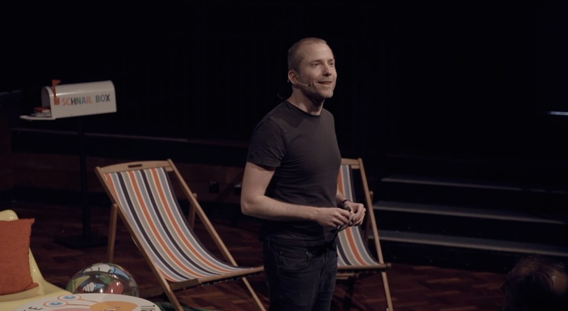

Summit videos, ind.ie and important dates
8th September, 2014 — .
Hey everyone,
Another few months have passed, and we wanted to catch you up on everything that's been happening at ind.ie.
A new domain!
What's “ind.ie”, you wonder? It's our new domain name, and our all-encompassing name for the ind.ie projects. You can find everything that was previously available on the site, and we'll be adding more information in the next few weeks.
Indie Tech Summit videos are all online

All the videos of the talks, panels and announcements are now available to watch at ind.ie/summit/videos. There's also a transcript of each video for those who prefer text.
Privacy Policy changes on the ind.ie website
We promised we'd tell you when we made changes to our Privacy Policy. Yesterday I made the changes to let you know that we're now using Piwik analytics on the ind.ie site to track the most popular pages, video views and work out where we can improve the site. I'm waiting for Piwik to fix a bug on their latest version, but when it's fixed, I will add a checkbox on the Privacy page so you can choose to opt out of our analytics tracking if you so wish.
Crowdfunding begins 8th November, 2014
Our crowdfunding date is now set as the 8th of November this year, and we'll remind you nearer the time. That's only 61 days away!
Before the crowdfunding comes the Thunderclap on the 24th October. Check out our Thunderclap page to find out more.
There's a lot more to share with you before November, so sign up for updates below to be the first to hear all about ind.ie.